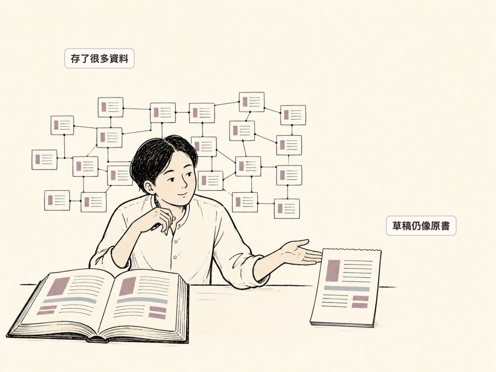
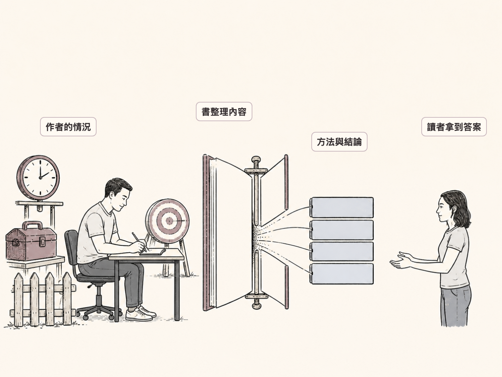
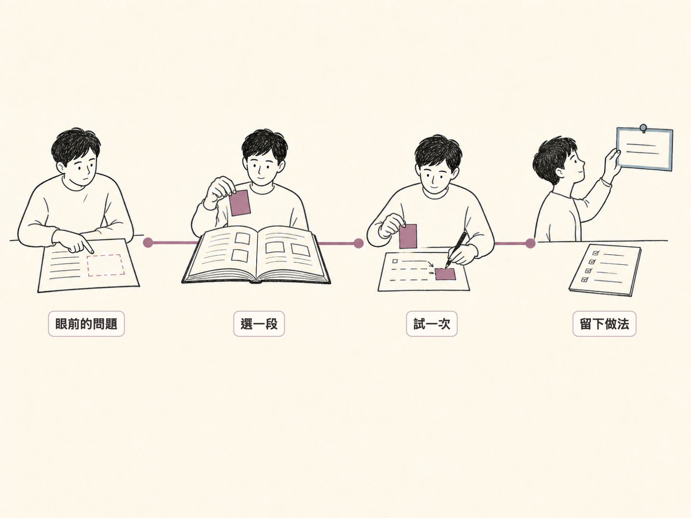

笔记做得再好，也不等于有自己的看法
原文小标题：（开篇，无小标题）
开篇是一个很多人熟悉的场景：花很多时间整理一本书——画心智图、存笔记、把重点放进第二大脑。几天后打开资料库，资料很多，却说不出哪一则能帮你解决眼下的问题。开始写，第一段写完，草稿像是把书缩短了一点。

作者区分了两件事：第二大脑、心智图和笔记资料库帮你存资料，而选眼前需要哪些资料，只能由你来做。书已经替你选好了题目、重点、例子和结论，你照着书写，文章自然容易变成摘要；于是你又存更多笔记，想留住书里每一个重点，结果还是卡在三个问题上：
- 哪一则笔记能帮我解决现在的问题？
- 这篇文章除了整理这本书，还能给读者什么？
- 书里的方法能用在我的情况吗？
你照着书写，文章就容易变成摘要。
好方法离开作者的情况，可能就不管用
原文小标题：一本好方法，为什么放到你身上可能不管用？
作者认为，读一本书也是在读作者怎么想、才写出书里的答案。她读 Eric Jorgenson 的《The Book of Elon》时，停在〈The Algorithm〉这一章：一共五个步骤，前两步很简单——先问每个要求有没有必要，再删掉不必要的部分或流程。
作者写方法时，背后带着自己的处境：想做的事、时间和资源、限制、例子。作者可能试过很多次才找到这套做法；书会交代一些背景，摘要则只留书里的重点。读者最后看到的，常常只剩方法和结论。

方法要在对的情况，才用得上。
读者看不见方法需要的情况时，书里的方法看起来就像人人都能用。可你想做的事、可用的时间、手上的资源和要解的问题，可能都跟作者不同。〈The Algorithm〉原本用在工程和工厂，Elon Musk 面对的是零件、机器和生产线；作者是把其中“删除”的做法拿来审视自己的工作流程。
她再举效率书的常见画面：早起、排时间、养成习惯。这些可能有帮助，但先要问：它们有没有处理你眼前的问题？效率书常常默认读者有力气照着做，而焦虑、抑郁或创伤反应会让人很难专心、睡觉和做决定——到了这一步，排好行程也解决不了心理健康问题。
如果一开始就照着书读，书很快就替你决定了什么问题重要、哪些重点要记、用什么例子、最后要相信什么。读到最后，你很懂作者怎么想，却还没问过：作者的方法能用在你现在的问题上吗？
摘要有用：它帮人快速认识一本书，也帮人决定要不要读原书。但摘要不能替你的文章选重点。写文章时要自己选：书里哪个想法能回答文章的问题、哪个方法能用在你的情况、哪些重点虽然有趣却不放进这篇文章。
第二大脑越完整，为什么还是想不清楚
原文小标题：第二大脑做得越完整，为什么还是想不清楚？
你可能会想：是不是需要一个更好的笔记工具？作者自己就用一个有 AI 辅助的 wiki 当资料库：加标签、留下书和笔记，让自己以后找得到。她的资料库可以把〈The Algorithm〉标成“工作流程”。
资料库不知道删除步骤能不能帮我做好眼前的工作。
资料库有用，它把资料留住。但“相关”这个词需要说清楚——一则笔记究竟要帮哪一件事？
- 哪个项目？
- 哪个决定？
- 哪个问题？
- 哪一种情况？
作者坦言：答不出项目、决定、问题和情况时，资料库只是在存笔记。它可能找到两则有关的笔记，却不知道这两则能不能帮她写眼前的文章。笔记工具帮你找回资料，但不能替你选文章要用哪个想法，也不能告诉你书里的方法能不能用在你的情况。
记更多笔记之前，先找出自己的问题
原文小标题：在记更多笔记前，你少了哪一步？
作者说答案很简单，也要花力气：自己问一句“我现在想解什么问题？”书、摘要和笔记工具都说不出你现在想解的问题。
你一开始不用有答案。你先有一个问题。
写的时候可以改答案，也可以先留下还不懂的部分。这个问题要跟你现在的生活或工作有关：可以是你想解决的一个问题，也可以是一件你一直想弄懂的事。有了问题，读书才有方向，问题会帮你选：
- 哪一则笔记要留；
- 哪个想法要放进文章；
- 哪个方法要先查清楚，才能用。
作者自己的例子：有些工作越做越乱时，她会回到〈The Algorithm〉，问每一步到底要帮她做什么。写文章也一样，先有想弄懂的问题，再从书里找能帮上忙的部分。文章里写三件事：
- 你原本想弄懂什么；
- 书里哪一段让你改变了想法；
- 你现在怎么做，或者还要再找什么。
读书时还要把作者和自己的情况比一比：作者有多少时间、资源和限制？你有一样的吗？
摘要有用，但回答不了“为什么读你”
原文小标题：摘要有用，为什么还是不够？
作者并不否定摘要：读书摘要、书评和推荐本来就有用，有人先读完、先整理，你可以快速扫过一本书，再决定值不值得花时间读原书。但她想真正懂作者时，会回到原书，看哪些内容吸引自己、哪些自己不同意、作者又漏掉了什么。
所以她读别人的读书文章时，总会回到一个问题：
为什么我要读你的文章，而不是直接读原书？
她认为文章不必讲很大的理论，可以做三件原书做不了的事：
- 写书里的方法换到另一种情况后会怎么变；
- 把书里的想法和另一本书放在一起看；
- 说清楚书里的想法为什么能帮你解决眼前的问题。
读完之后三件事：写问题、选一段、试一次
原文小标题：读完一本书后，你下一步该怎么选？
读完一本书、觉得很有用时，作者会先问：你现在想解什么问题？然后做三件事：
- 写下一个眼前的问题：可以是一个决定、一个项目，或一件你一直卡住的事。
- 找书里一段能帮你的内容：可以是一段故事、一个方法，或一整章。
- 拿去试一次：试完后决定留下、改掉，或先放着。

她的示范仍是〈The Algorithm〉：Elon Musk 用五个步骤处理工程问题，先问每个要求有没有必要，再删掉不需要的零件或流程。她把它简化成“先问、再删”来整理自己的工作——工作多出很多步骤时，问这一步要帮她做什么，答不出来就删掉；电子报太长时，逐段问这一段有没有帮读者看懂文章，没有就删。
最后留下的做法很简单：步骤帮不到眼前的工作，就删掉。如果把这件事写成文章，她不会整理整本《The Book of Elon》，而会写：哪个工作变复杂了、她怎么用“先问、再删”、试完后留下了什么做法。
文章写的是我试过后知道的事。
评论区摘录
谢谢这番引导，让我有了不同的思路与省察。（作者在评论区回复了感谢）